소방설비산업기사(전기) (2013-06-02 기출문제)
1과목: 소방원론
1. 불꽃의 색깔에 의한 온도를 측정하였을 때 낮은 온도에서부터 높은 온도의 순서로 나열한 것은?
- 암적색, 백적색, 항적색, 휘백색
- 휘백색, 암적색, 백적색, 황적색
- 암적색, 황적색, 백적색, 휘백색
- 암적색, 휘백색, 황적색, 백적색
(정답률: 87%)

2. 화재시 온도상승이 100℃ 에서 500℃로 온도가 상승하였을 경우, 500℃ 의 열복사 에너지는 100℃ 의 열복사 에너지의 약 몇 배개 되겠는가?
- 18.45
- 22.12
- 26.03
- 30.27
(정답률: 47%)
3. 밀폐된 화재발생 공간에서 산소가 일시적으로 부족하다가 갑작스럽게 공급되면서 폭발적인 연소가 발생하는 현상은?
- 백드래프트
- 프로스오버
- 보일오버
- 슬롭오버
(정답률: 89%)
4. 경유 화재시 주수(물)에 의한 소화가 부적당한 이유는?
- 물보다 비중이 가벼워 물 위에 떠서 화재 확대의 우려가 있으므로
- 물과 반응하여 유독가스를 발생하므로
- 경유의 연소열로 산소가 방출되어 연소를 돕기 때문에
- 경유가 연소할 때 수소가스가 발생하여 연소를 돕기 때문에
(정답률: 81%)
5. 다음 중 Halon 1301의 가장 주된 소화효과는?
- 부촉매효과
- 희석효과
- 냉각효과
- 제거효과
(정답률: 90%)
6. 다음 중 발화의 위험이 가장 낮은 것은?
- 트리에틸알루미늄
- 팽창질석
- 수소화리튬
- 황린
(정답률: 91%)
7. 건축물의 주요구조부가 아닌 것은?
- 내력벽
- 지붕틀
- 보
- 옥외계단
(정답률: 92%)
8. 물의 증발잠열은 약 몇 cal/g 인가?
- 79
- 539
- 750
- 810
(정답률: 93%)
9. A급화재의 가연물질과 관계가 없는 것은?
- 섬유
- 목재
- 종이
- 유류
(정답률: 92%)
10. 순수한 액체 탄화수소를 완전 연소시키면 어떤 물질이 발생하는가?
- 산소, 물
- 물, 일산화탄소
- 일산화탄소, 이산화탄소
- 이산화탄소, 물
(정답률: 72%)
11. 프로판 가스의 증기 비중은 약 얼마인가? 9단, 공기의 분자량은 29 이고, 탄소의 원자량은 12, 수소의 원자량은 1 이다.)
- 1.37
- 1.52
- 2.21
- 2.51
(정답률: 77%)
12. 부피비로 메탄 80%, 에탄 15%, 프로판 4%, 부탕 1%인 혼합기체가 있다. 이 기체의 공기 중에서의 폭발하한계는 약 몇 vol% 인가? (단, 공기 중 단일 가스의 폭발하한계는 메탄 5vol%, 에탄 2vol%, 프로판 2vol%, 부탄 1.8vol% 이다.)
- 2.2
- 3.8
- 4.9
- 6.2
(정답률: 74%)
13. 폴리염화비닐이 연소할 때 생성되는 연소가스에 해당하지 않는 것은?
- HCl
- CO2
- CO
- SO2
(정답률: 76%)
14. 자연발화를 일으키는 원인이 아닌 것은?
- 산화열
- 분해열
- 흡착열
- 기화열
(정답률: 78%)
15. 제1종 분말소화약제의 주성분은?
- 탄산수소나트륨
- 탄산수소칼슘
- 요소
- 황상알루미늄
(정답률: 89%)
16. 유류화재시 분말소화약제와 병용이 가능하여 빠른 소화효과와 재 착화방지 효과를 기대할 수 있는 소화약제로 다음 중 가장 옳은 것은?
- 단백포소화약제
- 알코올형포소화약제
- 하성계면활성제포소화약제
- 수성막포소화약제
(정답률: 85%)
17. 다음 중 일반적인 소화방법의 분류로 가장 거리가 먼 것은?
- 질식소화
- 제거소화
- 냉각소화
- 방염소화
(정답률: 93%)
18. 연소의 3요소와 4요소의 차이를 제공하는 요소는?
- 가연물
- 산소공급원
- 점화원
- 연쇄반응
(정답률: 91%)
19. CO2 소화약제 사용시 CO2 방출 후 방호공간의 산소 부피농도를 구하는 식으로 옳은 식은?
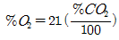
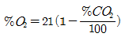
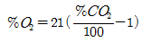
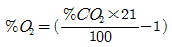
(정답률: 65%)
20. 이산화탄소의 성질에 관한 설명으로 틀린 것은?
- 임계온도는 약 31.35℃ 이다.
- 증기비중은 약 0.8로 공기보다 가볍다.
- 전기적으로 비전도성이다.
- 무색, 무취이다.
(정답률: 79%)
2과목: 소방전기회로
21. 그림은 공진브리지이다. 브리지가 평형일 때 주파수 f를 나타내는 식은?
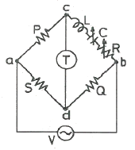
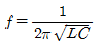
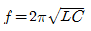
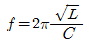
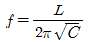
(정답률: 75%)
22. 유도결합 되어 있는 한 쌍의 코일이 있다. 1차측 코일의 전류가 매초 5A의 비율로 변화하여 2차측 코일 양단에 15V의 유도기전력이 발생하고 있다면 두 코일 사이의 상호 인덕턴스는 몇 [H]인가?
- 0.33 H
- 3 H
- 20 H
- 75 H
(정답률: 71%)
23. 어떤 전지를 이용하여 5A의 전류를 10분간 흘렸다면 전지에서 나온 전기량은?
- 50 C
- 500 C
- 1500 C
- 3000 C
(정답률: 69%)
24. 변압기에 부하를 연결하지 않았는데도 열이 많이 발생한 경우 그 원인으로 가장 적당한 것은?
- 2차 코일이 너무 가늘기 때문에
- 1차 코일의 권수가 적기 때문에
- 철심의 단면적이 너무 크기 때문에
- 1차 코일이 너무 굵기 때문에
(정답률: 70%)
25. 60Hz인 전압을 가하면 3A가 흐르는 코일이 있다. 이 코일에 같은 전압으로 50Hz를 가하면 이 코일에 흐르는 전류는?
- 2.1A
- 2.5A
- 3.6A
- 4.3A
(정답률: 47%)
26. 어떤 회로가 직렬공진이 되었을 때 전류가 최대로 되기 위한 조건은?
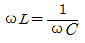
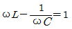
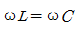
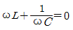
(정답률: 73%)
27. 부동충전방식의 일종으로 자기방전량 만큼만 순간순간 항상 충전하는 방식은?
- 급속충전
- 보통충전
- 균등충전
- 세류(트리클) 충전
(정답률: 69%)
28. 다음 중 원자 하나에 최외각 전자가 4개인 4개의 전자(four valence electrons)로서 가전자대의 4개의 전자가 안정화를 위해 원자끼리 결합한 구조로 일반적인 반도체 재료로 쓰고 있는 것은?
- Si
- P
- As
- Ga
(정답률: 84%)
29. 논리식
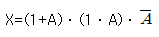
을 간단히 정리할 경우 출력은?- 0
- 1
- A
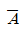
(정답률: 51%)
30. 솔레노이드 코일에 흐르는 전류와 코일 권수와 자력의 강도에 관한 관계를 설명한 것으로 가장 적당한 것은?
- 자력의 강도는 전류의 제곱에 비례한다.
- 자력의 강도는 전류에 비례하고 권수에 반비례한다.
- 자력의 강도는 전류와 권수에 비례한다.
- 자력의 강도는 권수의 제곱과 전류에 비례한다.
(정답률: 57%)
31. 3μF의 콘덴서 3개가 모두 병렬로 연결되어 있다면 합성정전용량은 몇 [μF] 인가?
- 1μF
- 3μF
- 6μF
- 9μF
(정답률: 70%)
32. 저항 R과 유도 리액턴스 XL이 병렬로 접속된 회로의 역률은?
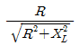
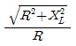
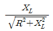
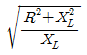
(정답률: 67%)
33. 피드백 제어걔의 특징으로 옳지 않은 것은?
- 계의 정확도가 증가한다.
- 계의 특성변화에 대한 입력 대 출력비의 감도가 증가된다.
- 외부 조건의 변화에 대한 영향을 줄일 수 있다.
- 시스템이 복잡해지고, 크기가 커지며, 값이 비싸진다.
(정답률: 53%)
34. 서보전동기는 서보기구에서 주로 어떤 곳의 기능을 담당하는가?
- 제어부
- 검출부
- 조작부
- 비교부
(정답률: 58%)
35. 프로세스제어에 대한 설명으로 가장 옳은 것은?
- 공업공정의 상태량을 제어량으로 하는 제어를 말한다.
- 목표값의 변화가 미리 정하여져 있어 그 정하여진 대로 변화하는 제어를 말한다.
- 회전수, 방위, 전압과 같은 제어량이 일정시간안에 목표값에 도달되는 제어이다.
- 임의로 변화하는 목표값을 추정하는 제어의 일종이다.
(정답률: 72%)
36. 발전기에서 유도기전력의 방향을 알 수 있는 법칙은?
- 키르히호프 법칙
- 패러데이의 법칙
- 오른나사의 법칙
- 플레밍의 오른손 법칙
(정답률: 68%)
37. 그림과 같은 무접점회로는 어떤 논리회로를 나타낸 것인가? (단, A는 입력단자이며, X는 출력단자이다.)
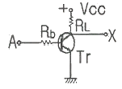
- AND
- OR
- NOT
- NAND
(정답률: 65%)
38. OFF 상태에서 ON 상태로, 또는 ON 상태에서 OFF 상태로 스위칭 할 수 있는 3개 또는 그 이상의 접합을 갖는 PNPN 구조로 된 반도체는?
- 전계효과 트랜지스터
- 사이리스터
- 터널다이오드
- 트랜지스터
(정답률: 75%)
39. 필터가 없는 단상 브리지 정류회로에서 2차측 평균 직류 전압이 저항 5Ω의 부하에 접속되어 24V가 공급된다. 입력전압의 최대값은 몇 [V]인가?
- 5π
- 12π
- 24π
- 32π
(정답률: 56%)
40. 부하 전압과 전류를 측정하기 위한 연결방법으로 옳은 것은?
- 전압계: 부하와 병렬, 전류계: 부하와 직렬
- 전압계: 부하와 병렬, 전류계: 부하와 병렬
- 전압계: 부하와 직렬, 전류계: 부하와 직렬
- 전압계: 부하와 직렬, 전류계: 부하와 병렬
(정답률: 82%)
3과목: 소방관계법규
41. 소방시설관리업을 하고자 하는 사람의 행정절차로서 옳은 것은?
- 시ㆍ도지사에게 등록하여야 한다.
- 안전행정부장관의 승인을 받아야 한다.
- 소방방재청장에게 등록하여야 한다.
- 소방본부장 또는 소방서장에게 허가를 받아야 한다.
(정답률: 69%)
42. 방염업자의 지위를 승계한 자는 누구에게 신고하여야 하는가?
- 시ㆍ도지사
- 안전행정부장관
- 소방방재청장
- 대통령
(정답률: 71%)
43. 위험물제조소 등에서 자동화재탐지설비를 설치하여야 할 제조소 및 일반취급소는 옥내에서 지정수량 몇 배 이상의 위험물을 저장ㆍ취급하는 곳인가?
- 지정수량 5배 이상
- 지정수량 10배 이상
- 지정수량 50배 이상
- 지정수량 100배 이상
(정답률: 49%)
44. 중앙 소방기술 심의위원회의 위원이 될 수 있는 사람은?
- 소방관련 연구소에서 3년 동안 연구에 종사한 사람
- 소방관련 법인에서 3년 동안 업무에 종사한 사람
- 소방시설관리사
- 소방관련 학사학위를 소지한 사람
(정답률: 55%)
45. 다음 중 자체소방대를 두어야 하는 해당 사업소는?
- 위험물제조소
- 지정수량 3000배 이상의 위험물을 취급하는 제조소
- 지정수량 3000배 이상의 위험물을 보일러로 소비하는 일반취급소
- 지정수량 3000배 이상의 제4류 위험물을 취급하는 일반취급소
(정답률: 75%)
46. 특정소방대상물 중 침대가 있는 숙박시설의 수용인원을 산정하는 방법으로 옳은 것은?
- 해당 특정소방대상물의 종사자 수에 침대의 수(2인용 침대는 2인으로 산정한다.)를 합한 수
- 해당 특정소방대상물의 종사자 수에 객실 수를 합한 수
- 해당 특정소방대상물의 종사자 수의 3배수
- 해당 특정소방대상물의 종사자 수에 숙박시설 바닥면적의 합계를 3m2로 나누어 얻은 수를 합한 수
(정답률: 78%)
47. 소방시설업에 대한 행정처분 기준에서 1차 처분사항으로 등록취소에 해당하는 것은?
- 소방시설업 등록사항 중 중요사항 변경 신고를 하지 아니하거나 거짓으로 한 때
- 거짓 그 밖의 부정한 방법으로 등록한 때
- 설계ㆍ시공을 수행하게 한 특정소방대상물 관계인에게 통지의무를 불이행한 때
- 화재안전기준 등에 적합하게 설계ㆍ시공 또는 감리를 하지 아니한 때
(정답률: 70%)
48. 대통령령으로 정하는 방염대상물품에 해당되지 않는 것은?
- 암막
- 블라인드
- 침구류
- 카펫
(정답률: 70%)
49. 화재가 발생되었을 때 화재조사의 실시 시기로서 옳은 것은?
- 소화활동 전에 실시한다.
- 소화활동과 동시에 실시한다.
- 소화활동 후에 실시한다.
- 소화활동과 무관하게 실시한다.
(정답률: 74%)
50. 소방안전관리자에 대한 실무교육의 과목 및 시간 그 박에 실무교육의 실시에 관한 사항은 누가 정하는가?
- 소방안전협회장
- 소방본부장
- 소방방재청장
- 시ㆍ도지사
(정답률: 48%)
51. 소방안전교육사 시험은 누가 실시하는가?
- 소방방재청장
- 안전행정부장관
- 시ㆍ도지사
- 소방본부장
(정답률: 51%)
52. 다음 중 소화활동설비가 아닌 것은?
- 제연설비
- 연결송수관설비
- 비상방송설비
- 연소방지설비
(정답률: 71%)
53. 위험물 각 유별 저장ㆍ취급이 공통기준에 대한 내용으로 옳지 않은 것은?
- 제1류 위험물 중 자연발화성 물품에 있어서는 불티ㆍ불꽃 또는 고온체와의 접근ㆍ과열 또는 공기와의 접촉을 피하고, 금수성 물품에 있어서는 물과의 접촉을 피하여야 한다.
- 제4류 위험물은 불티ㆍ불꽃ㆍ고온체와의 접근 도는 과열을 피하고, 함부로 증기를 발생시키지 아니하여야 한다.
- 제5류 위험물은 불티ㆍ불꽃ㆍ고온체와의 접근이나 과열ㆍ충격 또는 마찰을 피하여야 한다.
- 제6류 위험물은 가연물과의 접촉ㆍ혼합이나 분해를 촉진하는 물품과의 접근 또는 과열을 피하여야 한다.
(정답률: 69%)
54. 다음 중 한국소방안전협회의 업무가 아닌 것은?
- 소방기술과 안전관리에 관한 교육 및 조사ㆍ연구
- 위험물탱크 성능시험
- 소방기술과 안전관리에 관한 각종 간행물의 발간
- 화재예방과 안전관리 의식의 고취를 위한 대국민 홍보
(정답률: 83%)
55. 소방시설업에 속하지 않는 것은?
- 소방시설설계업
- 소방시설공사업
- 소방공사감리업
- 소방시설관리업
(정답률: 67%)
56. 소방본부장 또는 소방서장의 건축허가동의를 받아야 하는 범위에 속하지 않은 것은?
- 연면적이 400m2 이상인 건축물
- 지하층 또는 무창층이 있는 건축물로서 바닥면적이 100m2 이상인 층이 있는 것
- 특정소방대상물 중 위험물저장 및 처리시설 및 지하구
- 항공기격납고, 관망탑, 항공관제탑, 방송용 송수신탑
(정답률: 59%)
57. 소방안전관리자를 두어야 할 특정소방대상물로서 1급 소방안전관리대상물의 기준으로 옳은 것은?
- 가스제조설비를 갖추고 도시가스사업허가를 받아야 하는 시설
- 가연성가스를 1천톤 이상 저장ㆍ취급하는 시설
- 지하구
- 문화재보호법에 따라 국보 또는 보물로 지정된 목조건축물
(정답률: 62%)
58. 소방공사 감리원의 배치기준으로 옳지 않은 것은?
- 연면적이 20만 m2 이상인 특정소방대상물은 소방기술가 1인 이상 배치
- 지하층을 포함한 층수가 40층 이상인 특정소방대상물은 소방기술사 1인 이상 배치
- 연면적이 3만 m2이상 20만 m2 미만인 특정소방대상물(아파트제외)은 특급감리원 이상의 소방감리원 1인 이상 배치
- 연면적이 5천 이상 3만 m2 미만이거나 지하층을 포함한 층수가 16층 미만인 특정소방대상물의 공사현장은 초급감리원 이상의 소방감리원 1인 이상 배치
(정답률: 57%)
59. 소방안전관리자를 선임하지 아니한 소방안전관리대상물의 관계인에 대한 벌칙은?
- 100만원 이하의 벌금
- 300만원 이하의 벌금
- 1000만원 이하의 벌금
- 3000만원 이하의 벌금
(정답률: 77%)
60. 다음 특정소방대상물 중 노유자(老幼者)시설에 속하지 않는 것은?
- 아동복지시설
- 장애인거주시설
- 노인의료복지시설
- 정신의료기관
(정답률: 82%)
4과목: 소방전기시설의 구조 및 원리
61. 경계전로의 정격전류가 몇 [A]를 초과하는 경우 1급 누전경보기를 설치하여야 하는가?
- 30A
- 40A
- 50A
- 60A
(정답률: 82%)
62. 비상콘센트설비의 전원부와 외함 사이의 절연저항에 대한 기준으로 옳은 것은?
- 500 V 절연저항계로 측정하여 5MΩ 이상일 것
- 500 V 절연저항계로 측정하여 10MΩ 이상일 것
- 500 V 절연저항계로 측정하여 15MΩ 이상일 것
- 500 V 절연저항계로 측정하여 20MΩ 이상일 것
(정답률: 78%)
63. 누전경보기에서 누설전류를 증폭하는 장치는?
- 수신기
- 변압기
- 변류기
- 차단기
(정답률: 45%)
64. 연기감지기를 설치하여야 하는 장소로서 부적합한 곳은?
- 계단 및 경사로
- 복도
- 주방
- 엘리베이터 권상기실
(정답률: 73%)
65. 특정소방대상물에서 대형피난구유도등을 설치하여야 하는 장소로서 옳지 않은 것은?
- 위락시설
- 창고시설
- 지하철역사
- 판매시설
(정답률: 54%)
66. 공기관식 차동식분포형감지기 설치시 하나의 검출부분에 접속하는 공기관의 길이는 몇 [m] 이하로 하여야 하는가?
- 6 m 이하
- 20 m 이하
- 50 m 이하
- 100 m 이하
(정답률: 57%)
67. 단독경보형감지기는 각 실마다 설치하여야 한다. 그 바닥면적이 몇 [m2]를 초과하는 경우에 단독경보형감지기를 추가 설치하여야 하는가?
- 90 m2
- 100 m2
- 120 m2
- 150 m2
(정답률: 75%)
68. 스포트형감지기는 몇 도 이상 경사되지 않도록 부착하여야 하는가?
- 5°
- 15°
- 35°
- 45°
(정답률: 67%)
69. 비상콘센트용의 풀박스는 방청도장을 한 것으로서 철판의 두께는 몇 mm 이상인 것을 설치하여야 하는가?
- 1.2mm 이상
- 1.6mm 이상
- 2.0mm 이상
- 3.2mm 이상
(정답률: 81%)
70. 다음 ( ㉠ ), ( ㉡ )에 들어갈 내용으로 알맞은 것은?
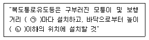
- ㉠ 20m, ㉡ 1.5m
- ㉠ 15m, ㉡ 1m
- ㉠ 15m, ㉡ 1.5m
- ㉠ 20m, ㉡ 1m
(정답률: 58%)
71. 누전경보기의 수신부를 설치할 수 있는 장소는?
- 부식성 가스가 다량으로 체류하는 장소
- 습도가 낮은 장소
- 화약류를 제조 또는 취급하는 장소
- 온도의 변화가 급격한 장소
(정답률: 80%)
72. 특별고압 또는 고압으로 수전하는 비상전원 수전설비의 종류가 아닌 것은?
- 큐비클형
- 옥외개방형
- 배전반형
- 방화구획형
(정답률: 44%)
73. 비상방송설비에서 각 층마다 설치된 확성기는 그 층의 각 부분으로부터 하나의 확성기까지의 수평거리가 얼마가 되도록 설치하여야 하는가?
- 25 m 이하
- 25 m 초과
- 50 m 이하
- 50 m 초과
(정답률: 79%)
74. 지하4층, 지상5층의 소방대상물에 비상방송설비를 설치하였다. 지하4층에서 발화한 경우 우선적으로 경보를 하여야 할 층은?
- 지하 3층, 지하 4층
- 지하 2층, 지하 3층, 지하 4층
- 지하 1층, 지하 2층, 지하 3층, 지하 4층
- 지하 1층, 지하 2층, 지하 3층, 지하 4층, 지상 1층
(정답률: 59%)
75. 자동화재탐지설비의 비상전원을 축전지설비로 할 경우 감시상태를 60분간 지속한 후 유효하게 몇 분 이상 경보할 수 있는 용량이어야 하는가? (단, 소방대상물 층수가 30층 미만인 경우이다.)
- 10분 이상
- 20분 이상
- 30분 이상
- 60분 이상
(정답률: 73%)
76. 유도표지의 표지면 휘도는 주위 조도 0[lx] 에서 60분간 발광 후 몇 [mcd/m2] 이상으로 하여야 하는가?
- 1 mcd/m2
- 5 mcd/m2
- 7 mcd/m2
- 12 mcd/m2
(정답률: 67%)
77. 부착높익 4m 미만이고 주요 구조부를 내화구조로 한 소방대상물에 연기감지기 2종을 설치하려고 한다. 바닥면적 몉 [m2] 마다 1개 이상을 설치하여야 하는가?
- 50 m2
- 75 m2
- 150 m2
- 300 m2
(정답률: 58%)
78. 다음은 옥내소화전설비의 내열배선의 시험기준에 관한 설명이다. ( )안에 들어갈 숫자로 알맞은 것은?
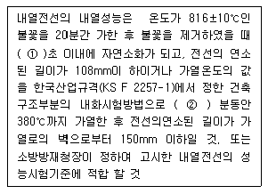
- ① 10 ② 15
- ① 15 ② 20
- ① 20 ② 20
- ① 30 ② 30
(정답률: 50%)
79. 휴대용 비상조명등 설치기준에 대한 설명 중 옳지 않은 것은?
- 숙박시설, 다중이용업소의 객실마다 잘 보이는 곳에 2개 이상을 설치할 것
- 대규모점포(지하상가 제외) 및 영화상영관에는 보행거리 50m이내 마다 3개 이상을 설치할 것
- 지하상가 및 지하역사에는 보행거리 25m 이내마다 3개 이상을 설치할 것
- 설치높이는 0.8m 이상 1.5m 이하의 높이에 설치할 것
(정답률: 74%)
80. 소방관서에 화재발생을 통보하는 자동화재속보설비에 대한 설명으로 옳지 않은 것은?
- 자동화재탐지설비와 연동되어야 한다.
- 스위치는 바닥으로부터 0.8m 이상 1.5m 이하의 높이에 설치한다.
- 종합방재센터가 있고 24시간 상시근무자가 있는 경우에도 자동화재속보설비를 설치하여야 한다.
- 속보기는 소방관서에 통신망으로 통보하도록 하며, 데이터 또는 코드전송방식을 부가적으로 설치할 수 있다.
(정답률: 73%)